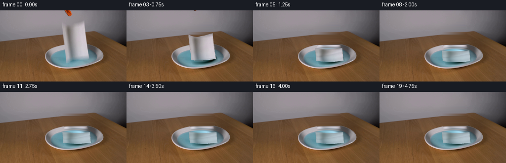
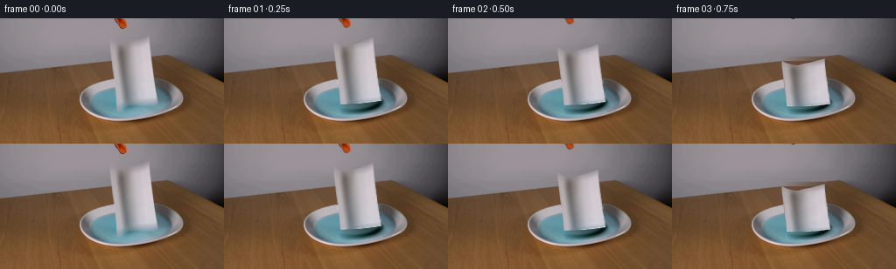
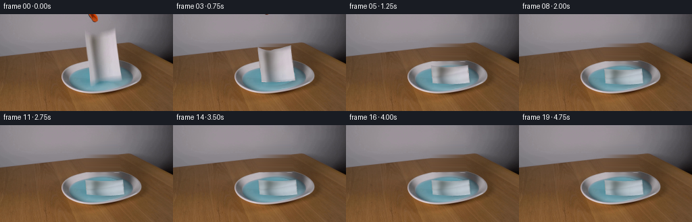
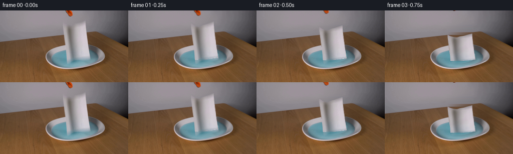

CODING AGENTS AS PIXEL WORLD MODELS
traex/GPT-6.1-Sol · 0127
点击播放 · 原生 RGB 像素
逐轮保存的候选
回放视频、检查图与代码变化。
每份候选均可单独播放。实际图片检查记录在下方工具轨迹中。
候选 01播放与检查图
点击播放 · 原生 RGB 像素


展开代码变化
--- 上一保存版本
+++ 本次保存版本
@@ -0,0 +1,195 @@
+from pathlib import Path
+import numpy as np
+import cv2
+from PIL import Image
+from scipy.ndimage import gaussian_filter
+import artifact_io
+
+ROOT=Path(__file__).resolve().parent
+H,W=144,256
+S=4
+orig=np.asarray(Image.open(ROOT/'first_frame.png').convert('RGB')).astype(np.float32)
+Y,X=np.mgrid[:H,:W].astype(np.float32)
+
+# The two sides of the folded towel, traced from the supplied RGB image.
+def surface(u,v):
+ yt=np.interp(u,[0,.12,.27,.38,.48,.65,.83,1],[24,28,30.8,31,28,26,22.5,19.8])
+ yb=98.2-4*u+1.0*np.sin(np.pi*u)
+ y=yt*(1-v)+yb*v
+ xl=np.interp(y,[19,24,33,43,52,62,72,82,93,99],[125.4,125.4,125.5,126.6,127.6,128.8,130.5,131.7,132.5,133.1])
+ xr=np.interp(y,[19,30,42,53,65,76,86,94,99],[170.7,171.0,172.4,174.0,175.2,176.7,178.4,179.7,180.2])
+ return np.stack([xl+(xr-xl)*u,y],-1)
+
+nu,nv=24,40
+u,v=np.meshgrid(np.linspace(0,1,nu+1),np.linspace(0,1,nv+1))
+source=surface(u,v).astype(np.float32)
+outline=np.concatenate([source[0],source[1:,-1],source[-1,-2::-1],source[-2:0:-1,0]])
+maskhi=np.zeros((H*S,W*S),np.uint8)
+cv2.fillPoly(maskhi,[np.round(outline*S).astype(np.int32)],255)
+paper_mask=cv2.resize(maskhi.astype(np.float32)/255,(W,H),interpolation=cv2.INTER_AREA)
+# Include the small refracted image directly beneath the towel in the clean plate.
+remove=paper_mask>.01
+reflection=np.zeros((H,W),np.uint8)
+cv2.fillPoly(reflection,[np.array([(132,94),(181,94),(185,101),(179,107),(153,109),(135,110),(132,105)])],1)
+remove |= reflection.astype(bool)
+remove=cv2.dilate(remove.astype(np.uint8),np.ones((3,3),np.uint8)).astype(bool)
+
+# Recover the wall/table and the occluded dish, without changing any visible setup.
+bg=orig.copy()
+for y in range(19,70):
+ xs=np.flatnonzero(remove[y])
+ if not len(xs): continue
+ a,b=xs[0]-1,xs[-1]+1
+ for x in xs:
+ bg[y,x]=orig[y,a]*(b-x)/(b-a)+orig[y,b]*(x-a)/(b-a)
+
+# A low-order photographic radial model of the dish, fit to its visible pixels.
+ang=np.deg2rad(-2.42)
+dx=X-148.77;dy=Y-91.62
+ex=dx*np.cos(ang)+dy*np.sin(ang)
+ey=-dx*np.sin(ang)+dy*np.cos(ang)
+r0=np.sqrt((ex/57.98)**2+(ey/25.03)**2)
+dy1=Y-96.3
+ix=(X-149.4)*np.cos(ang)+dy1*np.sin(ang)
+iy=-(X-149.4)*np.sin(ang)+dy1*np.cos(ang)
+r1=np.sqrt((ix/46.7)**2+(iy/18.3)**2)
+xx=(X-149)/58; yy=(Y-93)/26
+features=[np.ones_like(X),xx,yy,xx*yy,xx**2,yy**2]
+for rad,centers,width in [(r0,np.linspace(.5,1.05,14),.055),(r1,np.linspace(.35,1.45,20),.07)]:
+ for c in centers:
+ f=np.exp(-((rad-c)/width)**2)
+ features.extend([f,f*xx,f*yy])
+F=np.stack(features,-1)
+known=(r0<1.04)&(Y>66)&(Y<117)&(~remove)
+A=F[known].astype(np.float64)
+coef=np.linalg.solve(A.T@A+np.eye(A.shape[1])*1.8,A.T@orig[known])
+model=np.clip(F@coef,0,255).astype(np.float32)
+# Match the clean plate exactly along the cut boundary via a harmonic residual.
+area=remove&(Y>=70)
+res=orig-model
+res[area]=0
+for _ in range(900):
+ av=(np.roll(res,1,0)+np.roll(res,-1,0)+np.roll(res,1,1)+np.roll(res,-1,1))*.25
+ res[area]=av[area]
+bg[area]=np.clip((model+res)[area],0,255)
+# Source edge colors are decontaminated to avoid dragging dark background fringes.
+texture=orig.copy()
+edge=(paper_mask>.05)&(paper_mask<.99)
+texture[edge]=np.clip((orig[edge]-bg[edge]*(1-paper_mask[edge,None]))/paper_mask[edge,None],70,235)
+# Extend the towel's colors by one pixel for bilinear texture interpolation.
+full=(paper_mask>.25).astype(np.uint8)
+from scipy.ndimage import distance_transform_edt
+_,inds=distance_transform_edt(1-full,return_indices=True)
+tex=texture[inds[0],inds[1]].astype(np.float32)
+
+# Small tool tip at the upper edge; the jaws release and retreat upwards.
+toolmask=np.zeros((H,W),np.uint8)
+for j in range(12):
+ rgb=orig[j]
+ valid=((rgb[:,0]-rgb[:,1]>25)|(rgb.mean(-1)<120))&(np.arange(W)>=129)&(np.arange(W)<=147)
+ toolmask[j,valid]=255
+toolmask=cv2.dilate(toolmask,np.ones((3,3),np.uint8))
+toolmask[13:]=0
+wall=orig.copy()
+for j in range(14):
+ ids=np.flatnonzero(toolmask[j])
+ if len(ids):
+ a,b=ids[0]-1,ids[-1]+1
+ for x in ids:wall[j,x]=orig[j,a]*(b-x)/(b-a)+orig[j,b]*(x-a)/(b-a)
+bg[toolmask>0]=wall[toolmask>0]
+toolalpha=toolmask.astype(np.float32)/255
+
+# Piecewise affine texture rasterization at 4x resolution for soft photographic edges.
+triangles=[]
+for j in range(nv):
+ for i in range(nu):
+ triangles.extend([[(j,i),(j,i+1),(j+1,i)],[(j,i+1),(j+1,i+1),(j+1,i)]])
+
+def cloth_layer(pos,t):
+ hh,ww=H*S,W*S
+ mapx=np.full((hh,ww),-1,np.float32);mapy=mapx.copy()
+ umap=np.zeros_like(mapx);vmap=np.zeros_like(mapx)
+ for tri in triangles:
+ p=np.array([pos[j,i] for j,i in tri])*S
+ q=np.array([source[j,i] for j,i in tri])
+ lo=np.maximum(np.floor(p.min(0)).astype(int),0)
+ hi=np.minimum(np.ceil(p.max(0)).astype(int),[ww-1,hh-1])
+ if np.any(hi<lo):continue
+ a,b,c=p
+ den=(b[1]-c[1])*(a[0]-c[0])+(c[0]-b[0])*(a[1]-c[1])
+ if abs(den)<1e-5:continue
+ yy0,xx0=np.mgrid[lo[1]:hi[1]+1,lo[0]:hi[0]+1].astype(np.float32)
+ # centers of subpixels, in the source image's pixel-centered coordinates
+ px=xx0+.5;py=yy0+.5
+ wa=((b[1]-c[1])*(px-c[0])+(c[0]-b[0])*(py-c[1]))/den
+ wb=((c[1]-a[1])*(px-c[0])+(a[0]-c[0])*(py-c[1]))/den
+ wc=1-wa-wb
+ hit=(wa>=-1e-5)&(wb>=-1e-5)&(wc>=-1e-5)
+ sl=np.s_[lo[1]:hi[1]+1,lo[0]:hi[0]+1]
+ mapx[sl][hit]=(wa*q[0,0]+wb*q[1,0]+wc*q[2,0])[hit]
+ mapy[sl][hit]=(wa*q[0,1]+wb*q[1,1]+wc*q[2,1])[hit]
+ uv=np.array([[u[j,i],v[j,i]] for j,i in tri])
+ umap[sl][hit]=(wa*uv[0,0]+wb*uv[1,0]+wc*uv[2,0])[hit]
+ vmap[sl][hit]=(wa*uv[0,1]+wb*uv[1,1]+wc*uv[2,1])[hit]
+ alpha=(mapx>=0).astype(np.float32)
+ col=cv2.remap(tex,mapx,mapy,cv2.INTER_LINEAR,borderMode=cv2.BORDER_REPLICATE)
+ # Wetting proceeds from the lower edge, then runs through the folded fibers.
+ wet=np.clip((t-.65)/1.65,0,1)
+ localwet=np.clip(wet*1.45-.38*(1-vmap)+.1*np.sin(umap*8+vmap*4),0,1)
+ dye=np.array([126,177,188],np.float32)
+ col=col*(1-.40*localwet[...,None])+dye*(.40*localwet[...,None])
+ shade=1+np.clip((t-.55)/.7,0,1)*(.028*np.sin(vmap*17+umap*4)-.03*np.exp(-((umap-.3)/.075)**2))
+ col*=shade[...,None]
+ lowa=cv2.resize(alpha,(W,H),interpolation=cv2.INTER_AREA)
+ lowc=cv2.resize(col*alpha[...,None],(W,H),interpolation=cv2.INTER_AREA)
+ return lowc,lowa
+
+def shape(t):
+ # The hanging sheet initially descends under gravity; contact arrests its
+ # bottom edge while the rest folds down onto the surface of the liquid.
+ collapse=np.interp(t,[0,.25,.5,.75,1.,1.25,1.5,2,4.75],[0,.015,.10,.36,.70,.91,1,1,1])
+ s=collapse
+ p=source.copy()
+ shift=np.interp(t,[0,.25,.5,.75,1,1.5],[0,1.1,4,7,7,5])
+ # A modest widening and buckling as the folded material loses stiffness.
+ xf=153.6+(u-.5)*56+2.0*np.sin(v*6+u*2)*np.sin(np.pi*u)+2.0*v
+ yf=80.7+22.0*v+2*np.sin(np.pi*u)-1.7*np.sin(v*9+u*4)*np.sin(np.pi*v)
+ p[...,0]=(1-s)*source[...,0]+s*xf
+ p[...,1]=(1-s)*(source[...,1]+shift*(1-v*.75))+s*yf
+ flutter=np.sin(7*t+v*5)*np.sin(np.pi*v)*np.sin(np.pi*u)
+ p[...,0]+=.8*np.sin(np.pi*s)*flutter
+ p[...,1]+=1.3*np.sin(np.pi*s)*flutter
+ settle=np.clip(t-1.5,0,None)
+ if t>1.5:
+ p[...,0]+=.7*(1-np.exp(-settle/1.2))+.45*np.exp(-settle/1.1)*np.sin(5*settle)*np.sin(np.pi*v)
+ p[...,1]+=.55*(1-np.exp(-settle/1.8))+.30*np.exp(-settle/1.1)*np.sin(6*settle)*np.sin(np.pi*u)
+ return p
+
+water=((ix/46.7)**2+(iy/18.3)**2<.98).astype(np.float32)
+frames=[]
+for idx in range(20):
+ if idx==0:
+ frames.append(orig.astype(np.uint8));continue
+ t=idx/4
+ canvas=bg.copy()
+ # Low-amplitude concentric waves from gentle towel/liquid contact.
+ tau=max(0,t-.60)
+ if tau>0:
+ rad=np.sqrt(((X-156)/1.0)**2+((Y-96)/.40)**2)
+ wave=np.sin(rad*.52-tau*8)*np.exp(-((rad-(8+tau*15))/8)**2)*2.0*np.exp(-tau/.9)
+ canvas+=wave[...,None]*water[...,None]*np.array([.85,1,1.05])
+ paper,alpha=cloth_layer(shape(t),t)
+ shadow=gaussian_filter(alpha,1.35)*.085
+ canvas*=1-shadow[...,None]*water[...,None]
+ canvas=canvas*(1-alpha[...,None])+paper
+ # Tool tip jaw separation is subtle and it is withdrawn from the scene.
+ displacement=np.interp(t,[0,.25,.5,.75,1],[0,1.4,5.5,11,17])
+ M=np.array([[1,0,-.16*displacement],[0,1,-displacement]],np.float32)
+ ta=cv2.warpAffine(toolalpha,M,(W,H),flags=cv2.INTER_LINEAR)
+ tc=cv2.warpAffine(orig*toolalpha[...,None],M,(W,H),flags=cv2.INTER_LINEAR)
+ canvas=canvas*(1-ta[...,None])+tc
+ frames.append(np.clip(np.rint(canvas),0,255).astype(np.uint8))
+frames=np.stack(frames)
+Image.fromarray(np.clip(bg,0,255).astype(np.uint8)).save(ROOT/'.tmp/clean_plate.png')
+np.save(ROOT/'.tmp/candidate.npy',frames)
+artifact_io.save(frames,ROOT)
候选 02播放与检查图
点击播放 · 原生 RGB 像素


展开代码变化
--- 上一保存版本
+++ 本次保存版本
@@ -43,32 +43,38 @@
for x in xs:
bg[y,x]=orig[y,a]*(b-x)/(b-a)+orig[y,b]*(x-a)/(b-a)
-# A low-order photographic radial model of the dish, fit to its visible pixels.
+# Continue the visible elliptical rings in polar coordinates. Interpolation
+# along each ring preserves the original ceramic shading and liquid hue.
ang=np.deg2rad(-2.42)
dx=X-148.77;dy=Y-91.62
ex=dx*np.cos(ang)+dy*np.sin(ang)
ey=-dx*np.sin(ang)+dy*np.cos(ang)
r0=np.sqrt((ex/57.98)**2+(ey/25.03)**2)
+phi=np.arctan2(ey/25.03,ex/57.98)%(2*np.pi)
dy1=Y-96.3
ix=(X-149.4)*np.cos(ang)+dy1*np.sin(ang)
iy=-(X-149.4)*np.sin(ang)+dy1*np.cos(ang)
-r1=np.sqrt((ix/46.7)**2+(iy/18.3)**2)
-xx=(X-149)/58; yy=(Y-93)/26
-features=[np.ones_like(X),xx,yy,xx*yy,xx**2,yy**2]
-for rad,centers,width in [(r0,np.linspace(.5,1.05,14),.055),(r1,np.linspace(.35,1.45,20),.07)]:
- for c in centers:
- f=np.exp(-((rad-c)/width)**2)
- features.extend([f,f*xx,f*yy])
-F=np.stack(features,-1)
-known=(r0<1.04)&(Y>66)&(Y<117)&(~remove)
-A=F[known].astype(np.float64)
-coef=np.linalg.solve(A.T@A+np.eye(A.shape[1])*1.8,A.T@orig[known])
-model=np.clip(F@coef,0,255).astype(np.float32)
-# Match the clean plate exactly along the cut boundary via a harmonic residual.
area=remove&(Y>=70)
+rs=np.linspace(0,1.08,300)
+ps=np.linspace(0,2*np.pi,720,endpoint=False)
+rp,pp=np.meshgrid(rs,ps,indexing='ij')
+px=148.77+57.98*rp*np.cos(pp)*np.cos(ang)-25.03*rp*np.sin(pp)*np.sin(ang)
+py=91.62+57.98*rp*np.cos(pp)*np.sin(ang)+25.03*rp*np.sin(pp)*np.cos(ang)
+pol=cv2.remap(orig,px.astype(np.float32),py.astype(np.float32),cv2.INTER_LINEAR)
+bad=cv2.remap(area.astype(np.float32),px.astype(np.float32),py.astype(np.float32),cv2.INTER_LINEAR)>.01
+for j,radius in enumerate(rs):
+ good=~bad[j]
+ if good.sum()>5:
+ gp=ps[good];q=pol[j,good]
+ for c in range(3):
+ pol[j,:,c]=np.interp(ps,np.r_[gp-2*np.pi,gp,gp+2*np.pi],np.tile(q[:,c],3))
+ else:
+ pol[j]=[95,147,162]
+pol=gaussian_filter(pol,(1.4,2.0,0))
+model=cv2.remap(pol,(phi/(2*np.pi)*720).astype(np.float32),(r0/1.08*299).astype(np.float32),cv2.INTER_LINEAR)
res=orig-model
res[area]=0
-for _ in range(900):
+for _ in range(700):
av=(np.roll(res,1,0)+np.roll(res,-1,0)+np.roll(res,1,1)+np.roll(res,-1,1))*.25
res[area]=av[area]
bg[area]=np.clip((model+res)[area],0,255)
@@ -137,7 +143,7 @@
wet=np.clip((t-.65)/1.65,0,1)
localwet=np.clip(wet*1.45-.38*(1-vmap)+.1*np.sin(umap*8+vmap*4),0,1)
dye=np.array([126,177,188],np.float32)
- col=col*(1-.40*localwet[...,None])+dye*(.40*localwet[...,None])
+ col=col*(1-.30*localwet[...,None])+dye*(.30*localwet[...,None])
shade=1+np.clip((t-.55)/.7,0,1)*(.028*np.sin(vmap*17+umap*4)-.03*np.exp(-((umap-.3)/.075)**2))
col*=shade[...,None]
lowa=cv2.resize(alpha,(W,H),interpolation=cv2.INTER_AREA)
@@ -172,6 +178,10 @@
frames.append(orig.astype(np.uint8));continue
t=idx/4
canvas=bg.copy()
+ # The initial reflected towel fades as it lowers onto the water.
+ refl=(reflection.astype(np.float32)*np.clip(1-t/.95,0,1))
+ refl=gaussian_filter(refl,.6)
+ canvas=canvas*(1-refl[...,None])+orig*refl[...,None]
# Low-amplitude concentric waves from gentle towel/liquid contact.
tau=max(0,t-.60)
if tau>0:
可观测工具轨迹
实际执行的命令与返回图片。
命令 1exit 0
/bin/bash -lc 'ls -la && cat prompt.txt && cat GENERATION_RULES.md'
命令 2exit 0
/bin/bash -lc "cat artifact_io.py && python - <<'PY'
from PIL import Image
import numpy as np
im=np.array(Image.open('first_frame.png').convert('RGB'))
print(im.shape)
# represent sampled image as color labels 128x72
from collections import Counter
print(Counter(map(tuple,im.reshape(-1,3)//32)).most_common(25))
# color categorical map 128x72
for y in range(0,144,2):
s=''
for x in range(0,256,2):
r,g,b=im[y:y+2,x:x+2].mean((0,1))
if max(r,g,b)<45:c='K'
elif max(r,g,b)<85:c='k'
elif r>1.45*g and r>1.5*b:c='O'
elif b>r*1.18 and g>r*1.1:c='B'
elif min(r,g,b)>210:c='W'
elif min(r,g,b)>170:c='w'
elif min(r,g,b)>130:c='.'
elif min(r,g,b)>95:c=':'
else:c='-'
s+=c
print(f'{y:03} '+s)
PY"命令 3exit 0
/bin/bash -lc "python - <<'PY'
from PIL import Image
import numpy as np
im=np.array(Image.open('first_frame.png'))
chars='@%#*+=-:. '
print('GRAY crop x120:188 at pixels')
for y in range(0,106):
a=im[y,120:189].mean(-1)
print(f'{y:03} '+''.join(chars[min(9,int(v/25.6))] for v in a))
print('PIX row samples x120-190 step2')
for y in [0,10,15,20,25,30,35,40,45,50,60,70,80,90,94,96,100]:
print('Y',y)
print([(x,tuple(im[y,x])) for x in range(120,192,4)])
PY"命令 4exit 0
/bin/bash -lc "python - <<'PY'
import numpy as np
from PIL import Image
im=np.asarray(Image.open('first_frame.png')).astype(float)
for y in range(15,113):
s=''
for x in range(115,191):
r,g,b=im[y,x];
if max(r,g,b)<60:c='K'
elif max(r,g,b)<90:c='k'
elif r-g>18 and g-b>12:c='t'
elif b-r>15 and g-r>10:c='~'
elif b-r>3 and g-r>1:c='b'
elif min(r,g,b)>205:c='W'
elif min(r,g,b)>185:c='w'
elif min(r,g,b)>165:c='o'
elif min(r,g,b)>145:c='.'
elif min(r,g,b)>125:c=':'
elif min(r,g,b)>105:c='-'
else:c='*'
s+=c
print(f'{y:03} '+s)
PY"命令 5exit 0
/bin/bash -lc "python - <<'PY'
import numpy as np
from PIL import Image
im=np.asarray(Image.open('first_frame.png')).astype(float)
# at each row compute most abrupt x gradients x120..190
for y in range(17,102):
vals=np.mean(im[y],axis=-1)
delta=np.abs(np.diff(vals))
edges=sorted(range(122,186),key=lambda x:delta[x],reverse=True)[:6]
print(y,[(x,round(delta[x],1),tuple(im[y,x].astype(int))) for x in sorted(edges)])
PY"命令 6exit 0
/bin/bash -lc "python - <<'PY'
from PIL import Image
import numpy as np
im=np.array(Image.open('first_frame.png')).astype(float)
print('dish data scan')
for y in range(65,121,2):
print('Y',y,[(x,tuple(im[y,x].astype(int))) for x in range(90,213,8)])
print('packages')
import cv2, scipy
print(cv2.__version__,scipy.__version__)
PY"命令 7exit 0
/bin/bash -lc "python - <<'PY'
import numpy as np
from PIL import Image
im=np.array(Image.open('first_frame.png')).astype(float)
print('Rows 120:182, means rounded / x categories for tops')
for y in range(19,35):
print(y,' '.join(f'{int(v):3}' for v in im[y,124:175].mean(-1)))
print('mask categories whole image by brightness 1/8 resolution')
for y in range(0,144,4):
print(y,''.join(' .:-=+*#%@'[min(9,int(v/25.6))] for v in im[y:y+4].reshape(4,64,4,3).mean((0,2,3))))
PY"命令 8exit 0
/bin/bash -lc "python - <<'PY'
from PIL import Image
import numpy as np
im=np.array(Image.open('first_frame.png')).astype(float)
for y in range(66,118,2):
vals=im[y].mean(-1)
parts=[]
for lo,hi in [(85,129),(179,214)]:
a=[x for x in range(lo,hi) if vals[x]>145 and abs(im[y,x,0]-im[y,x,1])<20]
parts.append((min(a),max(a)) if a else None)
print(y,parts)
PY"命令 9exit 0
/bin/bash -lc "python - <<'PY'
import numpy as np,cv2
from PIL import Image
im=np.array(Image.open('first_frame.png')).astype(float)
pts=np.array([(127,69),(118,72),(106,76),(99,80),(93,86),(91,90),(91,94),(92,98),(96,102),(100,106),(106,110),(113,113),(126,116),(138,117),(155,116),(170,114),(183,110),(194,105),(202,100),(207,95),(208,92),(206,88),(205,85),(203,82)],np.float32)
print(cv2.fitEllipse(pts))
# boundaries left/right sheet
for y in range(20,106,5):
print(y,[(x,int(im[y,x].mean())) for x in [122,123,124,125,126,127,128,129,130,131,132,133,134,135,136,175,176,177,178,179,180,181,182,183]])
PY"命令 10exit 0
/bin/bash -lc "python - <<'PY'
import numpy as np
from PIL import Image
im=np.asarray(Image.open('first_frame.png'))
# top tool mask row extents orange-red and dark
for y in range(14):
a=[]
for x in range(124,152):
r,g,b=map(int,im[y,x])
if r-g>25 or (r+g+b)/3<120:a.append(x)
print(y,a)
PY"命令 11exit 0
/bin/bash -lc "python - <<'PY'
import numpy as np, cv2
from PIL import Image
im=np.asarray(Image.open('first_frame.png')).astype(float)
for y in range(70,114,2):
good=(im[y,:,1]-im[y,:,0]>25)&(im[y,:,2]-im[y,:,0]>35)
parts=[]
for lo,hi in [(88,132),(181,208)]:
a=np.where(good[lo:hi])[0]+lo
parts.append((int(min(a)),int(max(a))) if len(a) else None)
print(y,parts)
PY"命令 12exit 0
/bin/bash -lc "python - <<'PY'
from PIL import Image
import numpy as np
im=np.array(Image.open('first_frame.png'))
for x in [116,120,123,182,186,190]:
print('x',x,[(y,tuple(im[y,x])) for y in range(38,53)])
PY"命令 13exit 0
/bin/bash -lc "cat > generate.py <<'PY'
from pathlib import Path
import numpy as np
import cv2
from PIL import Image
from scipy.ndimage import gaussian_filter
import artifact_io
ROOT=Path(__file__).resolve().parent
H,W=144,256
S=4
orig=np.asarray(Image.open(ROOT/'first_frame.png').convert('RGB')).astype(np.float32)
Y,X=np.mgrid[:H,:W].astype(np.float32)
# The two sides of the folded towel, traced from the supplied RGB image.
def surface(u,v):
yt=np.interp(u,[0,.12,.27,.38,.48,.65,.83,1],[24,28,30.8,31,28,26,22.5,19.8])
yb=98.2-4*u+1.0*np.sin(np.pi*u)
y=yt*(1-v)+yb*v
xl=np.interp(y,[19,24,33,43,52,62,72,82,93,99],[125.4,125.4,125.5,126.6,127.6,128.8,130.5,131.7,132.5,133.1])
xr=np.interp(y,[19,30,42,53,65,76,86,94,99],[170.7,171.0,172.4,174.0,175.2,176.7,178.4,179.7,180.2])
return np.stack([xl+(xr-xl)*u,y],-1)
nu,nv=24,40
u,v=np.meshgrid(np.linspace(0,1,nu+1),np.linspace(0,1,nv+1))
source=surface(u,v).astype(np.float32)
outline=np.concatenate([source[0],source[1:,-1],source[-1,-2::-1],source[-2:0:-1,0]])
maskhi=np.zeros((H*S,W*S),np.uint8)
cv2.fillPoly(maskhi,[np.round(outline*S).astype(np.int32)],255)
paper_mask=cv2.resize(maskhi.astype(np.float32)/255,(W,H),interpolation=cv2.INTER_AREA)
# Include the small refracted image directly beneath the towel in the clean plate.
remove=paper_mask>.01
reflection=np.zeros((H,W),np.uint8)
cv2.fillPoly(reflection,[np.array([(132,94),(181,94),(185,101),(179,107),(153,109),(135,110),(132,105)])],1)
remove |= reflection.astype(bool)
remove=cv2.dilate(remove.astype(np.uint8),np.ones((3,3),np.uint8)).astype(bool)
# Recover the wall/table and the occluded dish, without changing any visible setup.
bg=orig.copy()
for y in range(19,70):
xs=np.flatnonzero(remove[y])
if not len(xs): continue
a,b=xs[0]-1,xs[-1]+1
for x in xs:
bg[y,x]=orig[y,a]*(b-x)/(b-a)+orig[y,b]*(x-a)/(b-a)
# A low-order photographic radial model of the dish, fit to its visible pixels.
ang=np.deg2rad(-2.42)
dx=X-148.77;dy=Y-91.62
ex=dx*np.cos(ang)+dy*np.sin(ang)
ey=-dx*np.sin(ang)+dy*np.cos(ang)
r0=np.sqrt((ex/57.98)**2+(ey/25.03)**2)
dy1=Y-96.3
ix=(X-149.4)*np.cos(ang)+dy1*np.sin(ang)
iy=-(X-149.4)*np.sin(ang)+dy1*np.cos(ang)
r1=np.sqrt((ix/46.7)**2+(iy/18.3)**2)
xx=(X-149)/58; yy=(Y-93)/26
features=[np.ones_like(X),xx,yy,xx*yy,xx**2,yy**2]
for rad,centers,width in [(r0,np.linspace(.5,1.05,14),.055),(r1,np.linspace(.35,1.45,20),.07)]:
for c in centers:
f=np.exp(-((rad-c)/width)**2)
features.extend([f,f*xx,f*yy])
F=np.stack(features,-1)
known=(r0<1.04)&(Y>66)&(Y<117)&(~remove)
A=F[known].astype(np.float64)
coef=np.linalg.solve(A.T@A+np.eye(A.shape[1])*1.8,A.T@orig[known])
model=np.clip(F@coef,0,255).astype(np.float32)
# Match the clean plate exactly along the cut boundary via a harmonic residual.
area=remove&(Y>=70)
res=orig-model
res[area]=0
for _ in range(900):
av=(np.roll(res,1,0)+np.roll(res,-1,0)+np.roll(res,1,1)+np.roll(res,-1,1))*.25
res[area]=av[area]
bg[area]=np.clip((model+res)[area],0,255)
# Source edge colors are decontaminated to avoid dragging dark background fringes.
texture=orig.copy()
edge=(paper_mask>.05)&(paper_mask<.99)
texture[edge]=np.clip((orig[edge]-bg[edge]*(1-paper_mask[edge,None]))/paper_mask[edge,None],70,235)
# Extend the towel's colors by one pixel for bilinear texture interpolation.
full=(paper_mask>.25).astype(np.uint8)
from scipy.ndimage import distance_transform_edt
_,inds=distance_transform_edt(1-full,return_indices=True)
tex=texture[inds[0],inds[1]].astype(np.float32)
# Small tool tip at the upper edge; the jaws release and retreat upwards.
toolmask=np.zeros((H,W),np.uint8)
for j in range(12):
rgb=orig[j]
valid=((rgb[:,0]-rgb[:,1]>25)|(rgb.mean(-1)<120))&(np.arange(W)>=129)&(np.arange(W)<=147)
toolmask[j,valid]=255
toolmask=cv2.dilate(toolmask,np.ones((3,3),np.uint8))
toolmask[13:]=0
wall=orig.copy()
for j in range(14):
ids=np.flatnonzero(toolmask[j])
if len(ids):
a,b=ids[0]-1,ids[-1]+1
for x in ids:wall[j,x]=orig[j,a]*(b-x)/(b-a)+orig[j,b]*(x-a)/(b-a)
bg[toolmask>0]=wall[toolmask>0]
toolalpha=toolmask.astype(np.float32)/255
# Piecewise affine texture rasterization at 4x resolution for soft photographic edges.
triangles=[]
for j in range(nv):
for i in range(nu):
triangles.extend([[(j,i),(j,i+1),(j+1,i)],[(j,i+1),(j+1,i+1),(j+1,i)]])
def cloth_layer(pos,t):
hh,ww=H*S,W*S
mapx=np.full((hh,ww),-1,np.float32);mapy=mapx.copy()
umap=np.zeros_like(mapx);vmap=np.zeros_like(mapx)
for tri in triangles:
p=np.array([pos[j,i] for j,i in tri])*S
q=np.array([source[j,i] for j,i in tri])
lo=np.maximum(np.floor(p.min(0)).astype(int),0)
hi=np.minimum(np.ceil(p.max(0)).astype(int),[ww-1,hh-1])
if np.any(hi<lo):continue
a,b,c=p
den=(b[1]-c[1])*(a[0]-c[0])+(c[0]-b[0])*(a[1]-c[1])
if abs(den)<1e-5:continue
yy0,xx0=np.mgrid[lo[1]:hi[1]+1,lo[0]:hi[0]+1].astype(np.float32)
# centers of subpixels, in the source image's pixel-centered coordinates
px=xx0+.5;py=yy0+.5
wa=((b[1]-c[1])*(px-c[0])+(c[0]-b[0])*(py-c[1]))/den
wb=((c[1]-a[1])*(px-c[0])+(a[0]-c[0])*(py-c[1]))/den
wc=1-wa-wb
hit=(wa>=-1e-5)&(wb>=-1e-5)&(wc>=-1e-5)
sl=np.s_[lo[1]:hi[1]+1,lo[0]:hi[0]+1]
mapx[sl][hit]=(wa*q[0,0]+wb*q[1,0]+wc*q[2,0])[hit]
mapy[sl][hit]=(wa*q[0,1]+wb*q[1,1]+wc*q[2,1])[hit]
uv=np.array([[u[j,i],v[j,i]] for j,i in tri])
umap[sl][hit]=(wa*uv[0,0]+wb*uv[1,0]+wc*uv[2,0])[hit]
vmap[sl][hit]=(wa*uv[0,1]+wb*uv[1,1]+wc*uv[2,1])[hit]
alpha=(mapx>=0).astype(np.float32)
col=cv2.remap(tex,mapx,mapy,cv2.INTER_LINEAR,borderMode=cv2.BORDER_REPLICATE)
# Wetting proceeds from the lower edge, then runs through the folded fibers.
wet=np.clip((t-.65)/1.65,0,1)
localwet=np.clip(wet*1.45-.38*(1-vmap)+.1*np.sin(umap*8+vmap*4),0,1)
dye=np.array([126,177,188],np.float32)
col=col*(1-.40*localwet[...,None])+dye*(.40*localwet[...,None])
shade=1+np.clip((t-.55)/.7,0,1)*(.028*np.sin(vmap*17+umap*4)-.03*np.exp(-((umap-.3)/.075)**2))
col*=shade[...,None]
lowa=cv2.resize(alpha,(W,H),interpolation=cv2.INTER_AREA)
lowc=cv2.resize(col*alpha[...,None],(W,H),interpolation=cv2.INTER_AREA)
return lowc,lowa
def shape(t):
# The hanging sheet initially descends under gravity; contact arrests its
# bottom edge while the rest folds down onto the surface of the liquid.
collapse=np.interp(t,[0,.25,.5,.75,1.,1.25,1.5,2,4.75],[0,.015,.10,.36,.70,.91,1,1,1])
s=collapse
p=source.copy()
shift=np.interp(t,[0,.25,.5,.75,1,1.5],[0,1.1,4,7,7,5])
# A modest widening and buckling as the folded material loses stiffness.
xf=153.6+(u-.5)*56+2.0*np.sin(v*6+u*2)*np.sin(np.pi*u)+2.0*v
yf=80.7+22.0*v+2*np.sin(np.pi*u)-1.7*np.sin(v*9+u*4)*np.sin(np.pi*v)
p[...,0]=(1-s)*source[...,0]+s*xf
p[...,1]=(1-s)*(source[...,1]+shift*(1-v*.75))+s*yf
flutter=np.sin(7*t+v*5)*np.sin(np.pi*v)*np.sin(np.pi*u)
p[...,0]+=.8*np.sin(np.pi*s)*flutter
p[...,1]+=1.3*np.sin(np.pi*s)*flutter
settle=np.clip(t-1.5,0,None)
if t>1.5:
p[...,0]+=.7*(1-np.exp(-settle/1.2))+.45*np.exp(-settle/1.1)*np.sin(5*settle)*np.sin(np.pi*v)
p[...,1]+=.55*(1-np.exp(-settle/1.8))+.30*np.exp(-settle/1.1)*np.sin(6*settle)*np.sin(np.pi*u)
return p
water=((ix/46.7)**2+(iy/18.3)**2<.98).astype(np.float32)
frames=[]
for idx in range(20):
if idx==0:
frames.append(orig.astype(np.uint8));continue
t=idx/4
canvas=bg.copy()
# Low-amplitude concentric waves from gentle towel/liquid contact.
tau=max(0,t-.60)
if tau>0:
rad=np.sqrt(((X-156)/1.0)**2+((Y-96)/.40)**2)
wave=np.sin(rad*.52-tau*8)*np.exp(-((rad-(8+tau*15))/8)**2)*2.0*np.exp(-tau/.9)
canvas+=wave[...,None]*water[...,None]*np.array([.85,1,1.05])
paper,alpha=cloth_layer(shape(t),t)
shadow=gaussian_filter(alpha,1.35)*.085
canvas*=1-shadow[...,None]*water[...,None]
canvas=canvas*(1-alpha[...,None])+paper
# Tool tip jaw separation is subtle and it is withdrawn from the scene.
displacement=np.interp(t,[0,.25,.5,.75,1],[0,1.4,5.5,11,17])
M=np.array([[1,0,-.16*displacement],[0,1,-displacement]],np.float32)
ta=cv2.warpAffine(toolalpha,M,(W,H),flags=cv2.INTER_LINEAR)
tc=cv2.warpAffine(orig*toolalpha[...,None],M,(W,H),flags=cv2.INTER_LINEAR)
canvas=canvas*(1-ta[...,None])+tc
frames.append(np.clip(np.rint(canvas),0,255).astype(np.uint8))
frames=np.stack(frames)
Image.fromarray(np.clip(bg,0,255).astype(np.uint8)).save(ROOT/'.tmp/clean_plate.png')
np.save(ROOT/'.tmp/candidate.npy',frames)
artifact_io.save(frames,ROOT)
PY
python generate.py"命令 14exit 0
/bin/bash -lc "python - <<'PY'
from PIL import Image
import numpy as np
f=np.load('.tmp/candidate.npy')
o=np.asarray(Image.open('first_frame.png'))
print(f.shape,f.dtype,'first equality',np.array_equal(f[0],o))
print('diff pixels',[(i,np.count_nonzero(np.any(f[i]"'!=f[max(0,i-1)],-1)),round(np.abs(f[i].astype(float)-f[max(0,i-1)]).mean(),2)) for i in range(20)])
for ii in [1,3,5,10,19]:
im=f[ii].astype(float)
print('"'FRAME',ii)
for y in range(18,119,3):
s=''
for x in range(116,189,2):
r,g,b=im[y:y+3,x:x+2].mean((0,1))
if r-g>18 and g-b>12:c='t'
elif b-r>20 and g-r>15:c='~'
elif min(r,g,b)>205:c='W'
elif min(r,g,b)>185:c='w'
elif min(r,g,b)>165:c='o'
elif min(r,g,b)>145:c='.'
elif min(r,g,b)>125:c=':'
elif min(r,g,b)>105:c='-'
elif max(r,g,b)<85:c='k'
else:c='*'
s+=c
print(y,s)
PY"命令 15exit 0
/bin/bash -lc "python - <<'PY'
import numpy as np
from PIL import Image
im=np.asarray(Image.open('.tmp/clean_plate.png'))
f=np.load('.tmp/candidate.npy')
for y in [74,78,82,86,90,94,98,102,106,110]:
print('bg',y,[(x,tuple(im[y,x])) for x in range(128,184,6)])
for y in [81,86,90,94,98,101]:
print('final',y,[(x,tuple(f[19,y,x])) for x in range(122,192,6)])
PY"命令 16exit 0
/bin/bash -lc "cat > .tmp/test_plate.py <<'PY'
import numpy as np,cv2
from PIL import Image
from scipy.ndimage import gaussian_filter
orig=np.asarray(Image.open('first_frame.png')).astype(np.float32)
H,W=orig.shape[:2];Y,X=np.mgrid[:H,:W].astype(float)
# rebuild accurate removal using saved bg changes
b=np.asarray(Image.open('.tmp/clean_plate.png'))
remove=np.any(np.abs(b.astype(float)-orig)>2,axis=-1)&(Y>=69)&(X>125)&(X<187)
remove=cv2.dilate(remove.astype(np.uint8),np.ones((3,3),np.uint8))>0
ang=np.deg2rad(-2.42);dx=X-148.77;dy=Y-91.62
ex=dx*np.cos(ang)+dy*np.sin(ang);ey=-dx*np.sin(ang)+dy*np.cos(ang)
r=np.sqrt((ex/57.98)**2+(ey/25.03)**2)
phi=np.arctan2(ey/25.03,ex/57.98)%(2*np.pi)
rs=np.linspace(0,1.08,300);ps=np.linspace(0,2*np.pi,720,endpoint=False)
rp,pp=np.meshgrid(rs,ps,indexing='ij')
px=148.77+57.98*rp*np.cos(pp)*np.cos(ang)-25.03*rp*np.sin(pp)*np.sin(ang)
py=91.62+57.98*rp*np.cos(pp)*np.sin(ang)+25.03*rp*np.sin(pp)*np.cos(ang)
pol=cv2.remap(orig,px.astype(np.float32),py.astype(np.float32),cv2.INTER_LINEAR)
bad=cv2.remap(remove.astype(np.float32),px.astype(np.float32),py.astype(np.float32),cv2.INTER_LINEAR)>.02
for j,radius in enumerate(rs):
good=~bad[j]
if good.sum()>5:
gp=ps[good];q=pol[j,good]
for c in range(3):pol[j,:,c]=np.interp(ps,np.r_[gp-2*np.pi,gp,gp+2*np.pi],np.tile(q[:,c],3))
else:
pol[j]=[95,147,162]
pol=gaussian_filter(pol,(1.4,2.0,0))
model=cv2.remap(pol,(phi/(2*np.pi)*720).astype(np.float32),(r/1.08*299).astype(np.float32),cv2.INTER_LINEAR)
# harmonically interpolate original boundary offset
res=orig-model;res[remove]=0
for i in range(600):
av=(np.roll(res,1,0)+np.roll(res,-1,0)+np.roll(res,1,1)+np.roll(res,-1,1))*.25
res[remove]=av[remove]
new=orig.copy();new[remove]=np.clip(model+res,0,255)[remove]
Image.fromarray(new.astype(np.uint8)).save('.tmp/polar_plate.png')
for y in [70,74,78,82,86,90,94,98,102,106,110]:
print(y,[(x,tuple(new[y,x].astype(int))) for x in range(134,179,6)])
PY
python .tmp/test_plate.py"命令 17exit 0
/bin/bash -lc "python - <<'PY'
p='generate.py'
s=open(p).read()
a=s.index('# A low-order photographic radial model')
b=s.index('# Source edge colors',a)
s=s[:a]+'''# Continue the visible elliptical rings in polar coordinates. Interpolation
# along each ring preserves the original ceramic shading and liquid hue.
ang=np.deg2rad(-2.42)
dx=X-148.77;dy=Y-91.62
ex=dx*np.cos(ang)+dy*np.sin(ang)
ey=-dx*np.sin(ang)+dy*np.cos(ang)
r0=np.sqrt((ex/57.98)**2+(ey/25.03)**2)
phi=np.arctan2(ey/25.03,ex/57.98)%(2*np.pi)
dy1=Y-96.3
ix=(X-149.4)*np.cos(ang)+dy1*np.sin(ang)
iy=-(X-149.4)*np.sin(ang)+dy1*np.cos(ang)
area=remove&(Y>=70)
rs=np.linspace(0,1.08,300)
ps=np.linspace(0,2*np.pi,720,endpoint=False)
rp,pp=np.meshgrid(rs,ps,indexing='ij')
px=148.77+57.98*rp*np.cos(pp)*np.cos(ang)-25.03*rp*np.sin(pp)*np.sin(ang)
py=91.62+57.98*rp*np.cos(pp)*np.sin(ang)+25.03*rp*np.sin(pp)*np.cos(ang)
pol=cv2.remap(orig,px.astype(np.float32),py.astype(np.float32),cv2.INTER_LINEAR)
bad=cv2.remap(area.astype(np.float32),px.astype(np.float32),py.astype(np.float32),cv2.INTER_LINEAR)>.01
for j,radius in enumerate(rs):
good=~bad[j]
if good.sum()>5:
gp=ps[good];q=pol[j,good]
for c in range(3):
pol[j,:,c]=np.interp(ps,np.r_[gp-2*np.pi,gp,gp+2*np.pi],np.tile(q[:,c],3))
else:
pol[j]=[95,147,162]
pol=gaussian_filter(pol,(1.4,2.0,0))
model=cv2.remap(pol,(phi/(2*np.pi)*720).astype(np.float32),(r0/1.08*299).astype(np.float32),cv2.INTER_LINEAR)
res=orig-model
res[area]=0
for _ in range(700):
av=(np.roll(res,1,0)+np.roll(res,-1,0)+np.roll(res,1,1)+np.roll(res,-1,1))*.25
res[area]=av[area]
bg[area]=np.clip((model+res)[area],0,255)
''' +s[b:]
s=s.replace('col=col*(1-.40*localwet[...,None])+dye*(.40*localwet[...,None])','col=col*(1-.30*localwet[...,None])+dye*(.30*localwet[...,None])')
s=s.replace('canvas=bg.copy()','''canvas=bg.copy()
# The initial reflected towel fades as it lowers onto the water.
refl=(reflection.astype(np.float32)*np.clip(1-t/.95,0,1))
refl=gaussian_filter(refl,.6)
canvas=canvas*(1-refl[...,None])+orig*refl[...,None]''')
open(p,'w').write(s)
PY
python generate.py"命令 18exit 0
/bin/bash -lc "python - <<'PY'
import numpy as np
from PIL import Image
from pathlib import Path
f=np.load('.tmp/candidate.npy')
o=np.array(Image.open('first_frame.png').convert('RGB'))
assert f.shape==(20,144,256,3) and f.dtype==np.uint8
assert np.array_equal(f[0],o)
z=np.load('pixels.npz')['pixels']
assert z.shape==(144,256,20)
print('Validated 20 RGB frames, 256x144, frame 00 exact.')
print('Outputs:',[(p.name,p.stat().st_size) for p in [Path('pixels.npz'),Path('index.html'),Path('generate.py')]])
print('bg center',np.array(Image.open('.tmp/clean_plate.png'))[98,170])
PY"保存候选 2 份；完成命令 18 次；可验证图片返回 0 张。原始 API 响应与完整日志保留在本地。